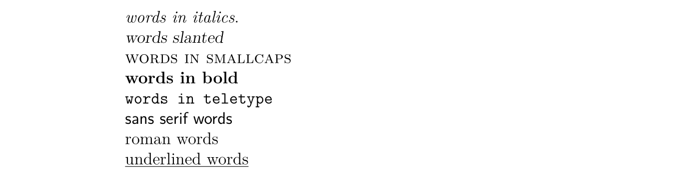

LaTeX 入门
介绍
什么是 LaTeX
LaTeX（读作/ˈlɑːtɛx/或/ˈleɪtɛx/）是一个让你的文档看起来更专业的排版系统，而不是文字处理器。它尤其适合处理篇幅较长、结构严谨的文档，并且十分擅长处理公式表达。它是免费的软件，对大多数操作系统都适用。
LaTeX 基于 TeX（Donald Knuth 在 1978 年为数字化排版设计的排版系统）。TeX 是一种电脑能够处理的低级语言，但大多数人发现它很难使用。LaTeX 正是为了让它变得更加易用而设计的。目前 LaTeX 的版本是 LaTeX 2e。
如果你习惯于使用微软的 Office Word 处理文档，那么你会觉得 LaTeX 的工作方式让你很不习惯。Word 是典型的「所见即所得」的编辑器，你可以在编排文档的时侯查看到最终的排版效果。但使用 LaTeX 时你并不能方便地查看最终效果，这使得你专注于内容而不是外观的调整。
一个 LaTeX 文档是一个以 .tex 结尾的文本文件，可以使用任意的文本编辑器编辑，比如 Notepad，但对于大多数人而言，使用一个合适的 LaTeX 编辑器会使得编辑的过程容易很多。在编辑的过程中你可以标记文档的结构。完成后你可以进行编译——这意味着将它转化为另一种格式的文档。它支持多种格式，但最常用的是 PDF 文档格式。
在开始之前
下面列出在本文中使用到的记号：
- 希望你实施的操作会被打上一个箭头
； - 你输入的字符会被装进代码块中；
- 菜单命令与按钮的名称会被标记为 粗体。
一些概念
如果需要编写 LaTeX 文档，你需要安装一个「发行版」，常用的发行版有 TeX Live、MikTeX 和适用于 macOS 用户的 MacTeX（实际上是 TeX Live 的 macOS 版本），至于 CTeX 则现在不推荐使用。TeX Live 和 MacTeX 带有几乎所有的 LaTeX 宏包；而 MikTeX 只带有少量必须的宏包，其他宏包将在需要时安装。
TeX Live 和 MikTeX 都带有 TeXworks 编辑器，你也可以安装功能更多的 TeXstudio 编辑器，或者自行配置 Visual Studio Code 或 Notepad++ 等编辑器。下文所使用的编辑器是运行在 Windows 7 上的 TeXworks。
大部分发行版都带有多个引擎，如 pdfTeX 和 XeTeX。对于中文用户，推荐使用 XeTeX 以获得 Unicode 支持。
TeX 有多种格式，如 Plain TeX 和 LaTeX。现在一般使用 LaTeX 格式。所以，你需要使用与你所使用的格式打包在一起的引擎。如对于 pdfTeX，你需要使用 pdfLaTeX，对于 XeTeX 则是 XeLaTeX。
扩展阅读：TeX 引擎、格式、发行版之介绍。
环境配置
对于 Windows 用户，你需要下载 TeX Live 或 MikTeX。国内用户可以使用 清华大学 TUNA 镜像站，请点击页面右侧的「获取下载链接」按钮，并选择「应用软件」标签下的「TeX 排版系统」即可下载 TeX Live 或 MikTeX 的安装包，其中 TeX Live 的安装包是一个 ISO 文件，需要挂载后以管理员权限执行 install-tl-advanced.bat。
对于 macOS 用户，清华大学 TUNA 镜像站同样提供 MacTeX 和 macOS 版 MikTeX 的下载。
对于 Linux 用户，如果使用 TeX Live，则同样下载 ISO 文件，执行 install-tl 脚本；如果使用 MikTeX，则按照 官方文档 进行安装。
文档结构
基本要素
一个新的文档会被自动打开。
行号并不是要素，但它可以帮助你比较代码与屏幕信息，找到错误。
语法色彩会高亮代码，使得代码更加易读。
\documentclass 命令必须出现在每个 LaTeX 文档的开头。花括号内的文本指定了文档的类型。article 文档类型适合较短的文章，比如期刊文章和短篇报告。其他文档类型包括 report（适用于更长的多章节的文档，比如博士生论文），proc（会议论文集），book 和 beamer。方括号内的文本指定了一些选项——示例中它设置纸张大小为 A4，主要文字大小为 12pt。
\begin{document} 和 \end{document} 命令将你的文本内容包裹起来。任何在 \begin{documnet} 之前的文本都被视为前导命令，会影响整个文档。任何在 \end{document} 之后的文本都会被忽视。
空行不是必要的，但它可以让长的文档更易读。
将不同的 LaTeX 文档放在不同的目录下，在编译的时候组合多个文件是一个很好的想法。
这时你的源文件会被转换为 PDF 文档，这需要花费一定的时间。在编译结束后，TeXworks 的 PDF 查看器会打开并预览生成的文件。PDF 文件会被自动地保存在与 TeX 文档相同的目录下。
处理问题
如果在你的文档中存在错误，TeXworks 无法创建 PDF 文档时，Typeset 按扭会变成一个红叉，并且底部的终端输出会保持展开。这时：
添加文档标题
\maketitle 命令可以给文档创建标题。你需要指定文档的标题。如果没有指定日期，就会使用现在的时间，作者是可选的。
\begin{document} 和 命令后紧跟着输入以下文本：
你的文档现在长成了这样：
\documentclass[a4paper, 12pt]{article}
\begin{document}
\title{My First Document}
\author{My Name}
\date{\today}
\maketitle
A sentence of text.
\end{document}
要点笔记：
\today是插入当前时间的命令。你也可以输入一个不同的时间，比如\date{November 2013}。- article 文档的正文会紧跟着标题之后在同一页上排版。report 会将标题置为单独的一页。
章节
如果需要的话，你可能想将你的文档分为章（Chatpers）、节（Sections）和小节（Subsections）。下列分节命令适用于 article 类型的文档：
\section{...}\subsection{...}\subsubsection{...}\paragraph{...}\subparagraph{...}
花括号内的文本表示章节的标题。对于 report 和 book 类型的文档我们还支持 \chapter{...} 的命令。
\section{Introduction}
This is the introduction.
\section{Methods}
\subsection{Stage 1}
The first part of the methods.
\subsection{Stage 2}
The second part of the methods.
\section{Results}
Here are my results.
你的文档会变成
\documentclass[a4paper, 12pt]{article}
\begin{document}
\title{My First Document}
\author{My Name}
\date{\today}
\maketitle
\section{Introduction}
This is the introduction.
\section{Methods}
\subsection{Stage 1}
The first part of the methods.
\subsection{Stage 2}
The second part of the methods.
\section{Results}
Here are my results.
\end{document}

创建标签
你可以对任意章节命令创建标签，这样他们可以在文档的其他部分被引用。使用 \label{labelname} 对章节创建标签。然后输入 \ref{labelname} 或者 \pageref{labelname} 来引用对应的章节。
\subsection{Stage 1} 下面另起一行，输入 \label{sec1}。Referring to section \ref{sec1} on page \pageref{sec1}。
你的文档会变成这样：
\documentclass[a4paper, 12pt]{article}
\begin{document}
\title{My First Document}
\author{My Name}
\date{\today}
\maketitle
\section{Introduction}
This is the introduction.
\section{Methods}
\subsection{Stage 1}
\label{sec1} The first part of the methods.
\subsection{Stage 2}
The second part of the methods.
\section{Results}
Here are my results. Referring to section \ref{sec1} on page \pageref{sec1}
\end{document}

生成目录（TOC）
如果你使用分节命令，那么可以容易地生成一个目录。使用 \tableofcontents 在文档中创建目录。通常我们会在标题的后面建立目录。
你可能也想也想更改页码为罗马数字（i,ii,iii）。这会确保文档的正文从第 1 页开始。页码可以使用 \pagenumbering{...} 在阿拉伯数字和罗马数字见切换。
\maketitle 之后输入以下内容：
\newpage 命令会另起一个页面，这样我们就可以看到 \pagenumbering 命令带来的影响了。你的文档的前 14 行长这样：
\documentclass[a4paper, 12pt]{article}
\begin{document}
\title{My First Document}
\author{My Name}
\date{\today}
\maketitle
\pagenumbering{roman}
\tableofcontents
\newpage
\pagenumbering{arabic}
文档的第一页长这样：

第二页：

文字处理
中文字体支持
阅读本文学习 LaTeX 的人，首要学会的自然是 LaTeX 的中文字体支持。事实上，让 LaTeX 支持中文字体有许多方法。在此我们仅给出最 简洁 的解决方案：使用 CTeX 宏包。只需要在文档的前导命令部分添加：
就可以了。在编译文档的时侯使用 xelatex 命令，因为它是支持中文字体的。
字体效果
LaTeX 有多种不同的字体效果，在此列举一部分：
\textit{words in italics} \textsl{words slanted} \textsc{words in smallcaps} \textbf{words
in bold} \texttt{words in teletype} \textsf{sans serif words} \textrm{roman
words} \underline{underlined words}
效果如下：

彩色字体
为了让你的文档支持彩色字体，你需要使用包（package）。你可以引用很多包来增强 LaTeX 的排版效果。包引用的命令放置在文档的前导命令的位置（即放在 \begin{document} 命令之前）。使用 \usepackage[options]{package} 来引用包。其中 package 是包的名称，而 options 是指定包的特征的一些参数。
使用 \usepackage{color} 后，我们可以调用常见的颜色：

使用彩色字体的代码为
其中 colorname 是你想要的颜色的名字，text 是你的彩色文本内容。注意到示例效果中的黄色与白色是有文字背景色的，这个我们同样可以使用 Color 包中的 \colorbox 命令来达到。用法如下：
\begin{document} 前输入 \usepackage{color}。{\color{red}fire}。
单词 fire 应该是红色的。
你也可以添加一些参数来调用更多的颜色，甚至自定义你需要的颜色。但这部分超出了本书的内容。如果想要获取更多关于彩色文本的内容请阅读 LaTeX Wikibook 的 Colors 章节。
字体大小
接下来我们列举一些 LaTeX 的字体大小设定命令：
normal size words {\tiny tiny words} {\scriptsize scriptsize words}
{\footnotesize footnotesize words} {\small small words} {\large large words}
{\Large Large words} {\LARGE LARGE words} {\huge huge words}
效果如下：

段落缩进
LaTeX 默认每个章节第一段首行顶格，之后的段落首行缩进。如果想要段落顶格，在要顶格的段落前加 \noindent 命令即可。如果希望全局所有段落都顶格，在文档的某一位置使用 \setlength{\parindent}{0pt} 命令，之后的所有段落都会顶格。
列表
LaTeX 支持两种类型的列表：有序列表（enumerate）和无序列表（itemize）。列表中的元素定义为 \item。列表可以有子列表。
\begin{enumerate}
\item First thing
\item Second thing
\begin{itemize}
\item A sub-thing
\item Another sub-thing
\end{itemize}
\item Third thing
\end{enumerate}
列表长这样：

可以使用方括号参数来修改无序列表头的标志。例如，\item[-] 会使用一个杠作为标志，你甚至可以使用一个单词，比如 \item[One]。
下面的代码：
\begin{itemize}
\item[-] First thing
\item[+] Second thing
\begin{itemize}
\item[Fish] A sub-thing
\item[Plants] Another sub-thing
\end{itemize}
\item[Q] Third thing
\end{itemize}
生成的效果为

注释和空格
我们使用 % 创建一个单行注释，在这个字符之后的该行上的内容都会被忽略，直到下一行开始。
下面的代码：
It is a truth universally acknowledged% Note comic irony
in the very first sentence , that a single man in possession of a good fortune,
must be in want of a wife.
生成的结果为

多个连续空格在 LaTeX 中被视为一个空格。多个连续空行被视为一个空行。空行的主要功能是开始一个新的段落。通常来说，LaTeX 忽略空行和其他空白字符，两个反斜杠（\\）可以被用来换行。
如果你想要在你的文档中添加空格，你可以使用 \vaspace{...} 的命令。这样可以添加竖着的空格，高度可以指定。如 \vspace{12pt} 会产生一个空格，高度等于 12pt 的文字的高度。
特殊字符
下列字符在 LaTeX 中属于特殊字符：
为了使用这些字符，我们需要在他们前面添加反斜杠进行转义：
注意在使用 ^ 和 ~ 字符的时侯需要在后面紧跟一对闭合的花括号，否则他们就会被解释为字母的上标，就像 \^ e 会变成
注意，反斜杠不能通过反斜杠转义（不然就变成了换行了），使用 \textbackslash 命令代替。

询问专家或者查看本页面的 源代码 获取帮助。
表格
表格（tabular）命令用于排版表格。LaTeX 默认表格是没有横向和竖向的分割线的——如果你需要，你得手动设定。LaTeX 会根据内容自动设置表格的宽度。下面的代码可以创一个表格：
省略号会由定义表格的列的代码替换：
l表示一个左对齐的列；r表示一个右对齐的列；c表示一个向中对齐的列；|表示一个列的竖线；
例如，{lll} 会生成一个三列的表格，并且保存向左对齐，没有显式的竖线；{|l|l|r|} 会生成一个三列表格，前两列左对齐，最后一列右对齐，并且相邻两列之间有显式的竖线。
表格的数据在 \begin{tabular} 后输入：
&用于分割列；\\用于换行；\hline表示插入一个贯穿所有列的横着的分割线；\cline{1-2}会在第一列和第二列插入一个横着的分割线。
最后使用 \end{tabular} 结束表格。举一些例子：
\begin{tabular}{|l|l|}
Apples & Green \\
Strawberries & Red \\
Orange & Orange \\
\end{tabular}
\begin{tabular}{rc}
Apples & Green \\
\hline
Strawberries & Red \\
\cline{1-1} Oranges & Orange \\
\end{tabular}
\begin{tabular}{|r|l|}
\hline
8 & here's \\
\cline{2-2} 86 & stuff \\
\hline
\hline
2008 & now \\
\hline
\end{tabular}
效果如下：

实践
尝试画出下列表格：

图表
本章介绍如何在 LaTeX 文档中插入图表。这里我们需要引入 graphicx 包。图片应当是 PDF，PNG，JPEG 或者 GIF 文件。下面的代码会插入一个名为 myimage 的图片：
\begin{figure}[h]
\centering
\includegraphics[width=1\textwidth]{myimage}
\caption{Here is my image}
\label{image-myimage}
\end{figure}
[h] 是位置参数，h 表示把图表近似地放置在这里（如果能放得下）。有其他的选项：t 表示放在在页面顶端；b 表示放在在页面的底端；p 表示另起一页放置图表。你也可以添加一个 ! 参数来强制放在参数指定的位置（尽管这样排版的效果可能不太好）。
\centering 将图片放置在页面的中央。如果没有该命令会默认左对齐。使用它的效果是很好的，因为图表的标题也是居中对齐的。
\includegraphics{...} 命令可以自动将图放置到你的文档中，图片文件应当与 TeX 文件放在同一目录下。
[width=1\textwidth] 是一个可选的参数，它指定图片的宽度——与文本的宽度相同。宽度也可以以厘米为单位。你也可以使用 [scale=0.5] 将图片按比例缩小（示例相当于缩小一半）。
\caption{...} 定义了图表的标题。如果使用了它，LaTeX 会给你的图表添加「Figure」开头的序号。你可以使用 \listoffigures 来生成一个图表的目录。
\label{...} 创建了一个可以供你引用的标签。
实践
\usepackage{graphicx}。
\begin{figure}[h!]
\centering
\includegraphics[width=1\textwidth]{ImageFilename}
\caption{My test image}
\end{figure}
将 ImageFilename 替换为你的文件的名字（不包括后缀）。如果你的文件名有空格，就使用双引号包裹，比如 "screen 20"。
公式
使用 LaTeX 的主要原因之一是它可以方便地排版公式。我们使用数学模式来排版公式。
插入公式
你可以使用一对 $ 来启用数学模式，这可以用于撰写行内数学公式。例如 $1+2=3$ 的生成效果是
如果你想要行间的公式，可以使用 $$...$$（现在我们推荐使用 \[...\]，因为前者可能产生不良间距）。例如，$$1+2=3$$ 的生产效果为
如果是生成带标号的公式，可以使用 \begin{equation}...\end{equation}。例如：
生成的效果为：

数字 6 代表的是章节的编号，仅当你的文档有设置章节时才会出现，比如 report 类型的文档。
使用 \begin{eqnarray}...\end{eqnarray} 来撰写一组带标号的公式。例如：
生成的效果为

要撰写不标号的公式就在环境标志的后面添加 * 字符，如 {equation*}，{eqnarray*}。
Warning
可以发现，使用 eqnarray 时，会出现等号周围的空隙过大之类的问题。
可以使用 amsmath 宏包中的 align 环境：
或在行间公式中使用 aligned 环境。它们的名字后面加上星号后，公式就不带标号了。
详见 更多阅读 中第一篇资料的「4.4 多行公式」。
数学符号
尽管一些基础的符号可以直接键入，但大多数特殊符号需要使用命令来显示。
本书只是数学符号使用的入门教程，LaTeX Wikibook 的数学符号章节是另一个更好更完整的教程。如果想要了解更多关于数学符号的内容请移步。如果你想找到一个特定的符号，可以使用 Detexfiy，它可以识别手写字符。
上标和下标
上标（Powers）使用 ^ 来表示，比如 $n^2$ 生成的效果为
下标（Indices）使用 _ 表示，比如 $2_a$ 生成的效果为
如果上标或下标的内容包含多个字符，请使用花括号包裹起来。比如 $b_{a-2}$ 的效果为
分数
分数使用 \frac{numerator}{denominator} 命令插入。比如 $$\frac{a}{3}$$ 的生成效果为
分数可以嵌套。比如 $$\frac{y}{\frac{3}{x}+b}$$ 的生成效果为
根号
我们使用 \sqrt{...} 命令插入根号。省略号的内容由被开根的内容替代。如果需要添加开根的次数，使用方括号括起来即可。
例如 $$\sqrt{y^2}$$ 的生成效果为
而 $$\sqrt[x]{y^2}$$ 的生成效果为
求和与积分
使用 \sum 和 \int 来插入求和式与积分式。对于两种符号，上限使用 ^ 来表示，而下限使用 _ 表示。
$$\sum_{x=1}^5 y^z$$ 的生成效果为
而 $$\int_a^b f(x)$$ 的生成效果为
希腊字母
我们可以使用反斜杠加希腊字母的名称来表示一个希腊字母。名称的首字母的大小写决定希腊字母的形态。例如
$\alpha$=$\beta$=$\delta, \Delta$=$\pi, \Pi$=$\sigma, \Sigma$=$\phi, \Phi, \varphi$=$\psi, \Psi$=$\omega, \Omega$=
实践

如果需要帮助，可以查看本页面的 源代码。
参考文献
介绍
LaTeX 可以轻松插入参考文献以及目录。本文会介绍如何使用另一个 BibTeX 文件来存储参考文献。
BibTeX 文件类型
BibTeX 文件包含了所有你想要在你文档中引用的文献。它的文件后缀名为 .bib。它的名字应设置为你的 TeX 文档的名字。.bib 文件是文本文件。你需要将你的参考文献按照下列格式输入：
@article{
Birdetal2001,
Author = {Bird, R. B. and Smith, E. A. and Bird, D. W.},
Title = {The hunting handicap: costly signaling in human foraging strategies},
Journal = {Behavioral Ecology and Sociobiology},
Volume = {50},
Pages = {9-19},
Year = {2001}
}
每一个参考文献先声名它的文献类型（reference type）。示例中使用的是 @article，其他的类型包括 @book，@incollection 用于引用一本书的中的章节，@inproceedings 用于引用会议论文。可以 在此 查看更多支持的类型。
接下来的花括号内首先要列出一个引用键值（citation key）。必须保证你引用的文献的引用键值是不同的。你可以自定义键值串，不过使用第一作者名字加上年分会是一个表义清晰的选择。
接下来的若干行包括文献的若干信息，格式如下：
你可以使用 LaTeX 命令来生成特殊的文字效果。比如意大利斜体可以使用 \emph{Rattus norvegicus}。
对于需要大写的字母，请用花括号包裹起来。BibTeX 会自动把标题中除第一个字母外所有大写字母替换为小写。比如 Dispersal in the contemporary United States 的生成效果为 Dispersal in the contemporary {U}nited {S}tates 的生成效果为
你可以手写 BibTeX 文件，也可以使用软件来生成。
插入文献列表
使用下列命令在文档当前位置插入文献列表：
参考文献写在 references.bib 里。
参考文献标注
使用 \cite{citationkey} 来在你想要引用文献的地方插入一个标注。如果你不希望在正文中插入一个引用标注，但仍想要在文献列表中显示这次引用，使用 \nocite{citationkey} 命令。
想要在引用中插入页码信息，使用方括号：\cite[p. 215]{citationkay}。
要引用多个文献，使用逗号分隔：\cite{citation01,citation02,citation03}。
引用格式
数字标号引用
LaTeX 包含了多种行内数字标号引用的格式：
Plain 方括号包裹数字的形式，如
Abbrv 与 plain 是相同的，但作者的名字是缩写。
Unsrt 与 plain 是相同的，但文献列表的排序按照在文中引用的先后顺序排列。
Alpha 与 plain 一样，但引用的标注是作者的名字与年份组合在一起，不是数字，如
作者日期引用
如果你想使用作者日期的引用，使用 natbib 包。它使用 \citep{...} 命令来生成一个方括号标注，如 \citet{...} 来生成一个标注，只把年份放到方括号里，如
Natbib 包也有三种格式：plainnat，abbrvnat 和 unsrtnat，他们与 plain，abbrv 和 unsrt 的效果是一样的。
其他引用格式
如果你需要使用不同的格式，你需要在同一个文件夹下创建一个格式文件（.bst 文件），引用这个格式的时侯使用它的文件名调用 \bibliographystyle{...} 命令实现。
实践
\cite，\bibliographystyle 和 \bibliograph 命令来引用文献。
更多阅读
-
一份（不太）简短的 LATEX 2ε 介绍 https://github.com/CTeX-org/lshort-zh-cn/releases/download/v6.02/lshort-zh-cn.pdf 或 112 分钟了解 LaTeX 2ε.
-
LaTeX Project http://www.latex-project.org/ Official website - has links to documentation, information about installing LATEX on your own computer, and information about where to look for help.
-
LaTeX Wikibook http://en.wikibooks.org/wiki/LaTeX/ Comprehensive and clearly written, although still a work in progress. A downloadable PDF is also available.
-
Comparison of TeX Editors on Wikipedia http://en.wikipedia.org/wiki/Comparison_of_TeX_editors Information to help you to choose which L A TEX editor to install on your own computer.
-
TeX Live http://www.tug.org/texlive/"An easy way to get up and running with the TeX document production system". Available for Unix and Windows (links to MacTeX for MacOSX users). Includes the TeXworks editor.
-
Workbook Source Files http://edin.ac/17EQPM1 Download the .tex file and other files needed to compile this workbook.
本文译自 http://www.docs.is.ed.ac.uk/skills/documents/3722/3722-2014.pdf, 依据其他文献略有修改。
创建日期: 2019年8月17日